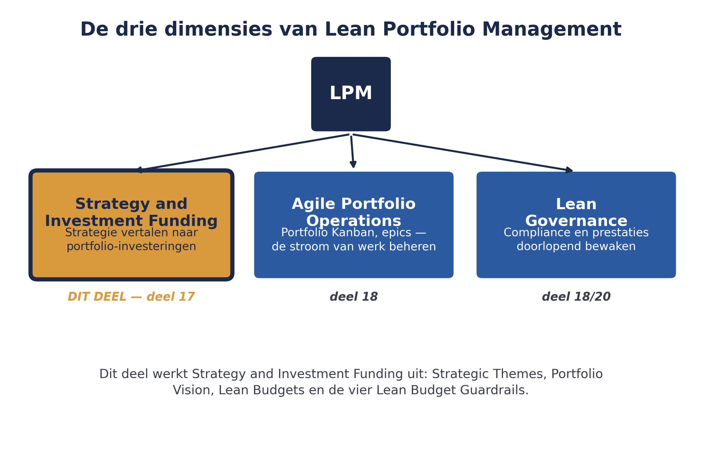

01
Waarom LPM nodig is
⏱ 16 minEen organisatie die alleen op ART- en Solution Train-niveau werkt, loopt tegen een grens aan: wie bepaalt hoeveel budget naar het Mutatieplatform gaat versus naar andere initiatieven bij Meridiaan? Wie zorgt dat een individuele Business Owner niet alleen naar zijn eigen ART kijkt, maar de bredere strategie van de organisatie vertegenwoordigt? Dit is precies het portfolio-vraagstuk dat in deel 1 werd geïntroduceerd als de reden voor Portfolio SAFe: sturing vanuit strategie en budget over meerdere waardestromen heen.
Lean Portfolio Management (LPM) bestaat uit drie samenhangende dimensies:
- Strategy and Investment Funding — hoe de ondernemingsstrategie wordt vertaald naar portfolio-investeringen. Het onderwerp van dit deel.
- Agile Portfolio Operations — hoe de stroom van werk op portfolioniveau wordt beheerd, met de Portfolio Kanban als centraal instrument. Onderwerp van deel 18.
- Lean Governance — hoe compliance en portfolioprestaties doorlopend worden gemeten en bewaakt, zonder terug te vallen op zware, traditionele goedkeuringsprocessen. Dit deel behandelt het budgetgerelateerde deel hiervan (de guardrails); deel 18 werkt de bredere governance verder uit.

Controlevragen
Uit Werkboek deel 17, Opdracht 17.1 en Zelftoets, vraag 1
1Leg uit waarom een organisatie die alleen op ART- en Solution Train-niveau werkt, uiteindelijk tegen een grens aanloopt als het gaat om budget. Verbind je antwoord aan de vier SAFe-configuraties uit deel 1.Toon antwoord
Op ART- en Solution Train-niveau ontbreekt een mechanisme om te bepalen hoeveel budget naar welke waardestroom gaat, en om individuele Business Owners te verbinden met de bredere ondernemingsstrategie. Dit is precies het probleem waarvoor Portfolio SAFe (de vierde configuratie uit deel 1) is bedoeld — sturing vanuit strategie en budget over meerdere waardestromen heen.
2Noem de drie dimensies van LPM.Toon antwoord
Strategy and Investment Funding, Agile Portfolio Operations, Lean Governance.